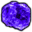
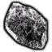
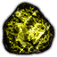
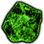
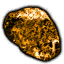
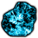

Alchemist

Etere
L'etere, di colore viola, si trova in molti ingredienti, fra cui erbe, minerali e parti del corpo dei mostri.

Hydragenum
L'hydragenum, di colore argento, si trova in molti ingredieni, fra cui erbe, minerali e parti del corpo dei mostri.

Zolfo
Lo zolfo, di colore giallo, si trova in molti ingredienti, fra cui erbe, minerali e parti del corpo dei mostri.

Rebis
Il rebis, di colore verde, si trova in molti ingredienti, fra cui erbe, minerali e parti del corpo dei mostri.

Vermiglio
Il vermiglio, di colore arancione, si trova in molti ingredienti, fra cui erbe, minerali e parti del corpo dei mostri.

Vetriolo
Il vetriolo, di colore blu, si trova in molti ingredienti, fra cui erbe, minerali e parti del corpo dei mostri.